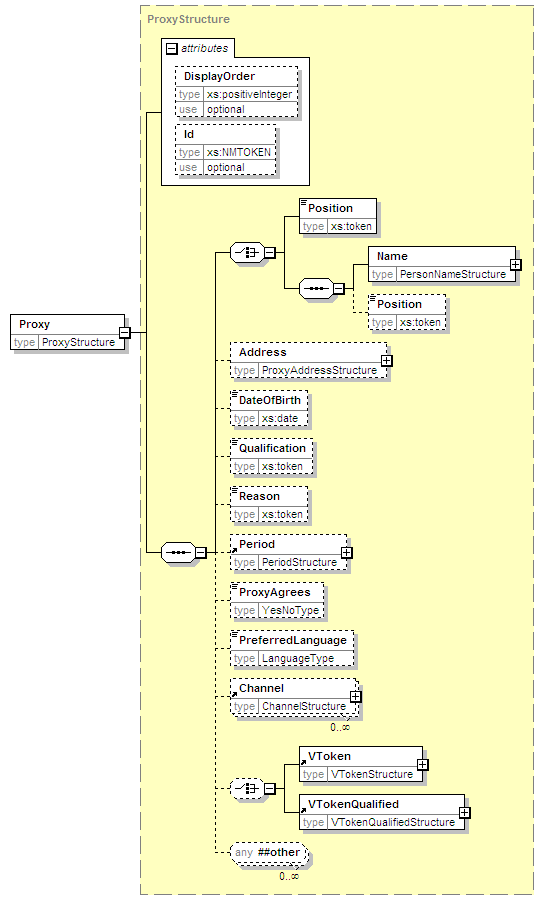

| diagram |  | ||||||||||||||||||
| namespace | urn:oasis:names:tc:evs:schema:eml | ||||||||||||||||||
| type | ProxyStructure | ||||||||||||||||||
| properties |
|
||||||||||||||||||
| children | Position Name Position Address DateOfBirth Qualification Reason Period ProxyAgrees PreferredLanguage Channel VToken VTokenQualified | ||||||||||||||||||
| used by |
|
||||||||||||||||||
| attributes |
|
||||||||||||||||||
| source | <xs:element name="Proxy" type="ProxyStructure"/> |